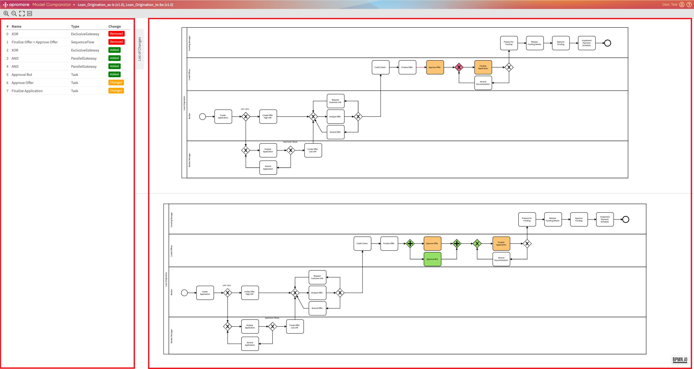

Compare models¶
Apromore now allows comparing two BPMN process models to perform delta analysis. For example, we can perform delta analysis to compare a process model discovered from an event log (capturing the as-is process) with a reference process model (capturing a to-be process).
When comparing two process models using delta analysis, Apromore displays the differences and allows to overlay them on top of the process models. To compare models, first, select 2 models and click on Analyze -> Compare models.
Model Comparator window appears, consisting of two parts: List of changes on the left side and models on the right side.

For ease of analysis, the activity gets highlighted in the model when we hover over it in the List of Changes.

Note
To monitor the activities changes easily, take a look at color coding. Removed activities are marked red. Changed activities are marked yellow. Added activities are marked green.
To hide the list of changes panel, you can click on the List of Changes button on the top left corner of the panel.

To make the model size bigger, click on the Zoom in button.

To reduce the model size, click on the Zoom out button.
To make the whole model fit in the size of the screen, click on the Fit to screen button.